Calcolo della capacita portante assiale di pali singoli
Punta e attrito laterale
La capacità assiale ultima è la somma dei contributi di punta e laterale:
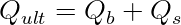
Tensioni efficaci.
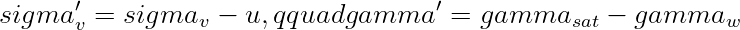
Contributi resistenti.
In terreno granulare: (Q_b=N_qsigma'_v(L)A_b). In terreno coesivo: (Q_b=N_cc_uA_b).
Per il fusto:
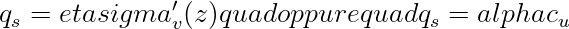
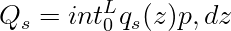
Esempio. Con (Q_b=850,mathrm{kN}), (Q_s=620,mathrm{kN}):
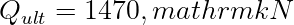
Con (gamma=2.5): (Q_{amm}=588,mathrm{kN}).
Riferimenti tecnici utilizzati:
- D.M. 17 gennaio 2018, NTC 2018, Capitolo 6.
- Circolare C.S.LL.PP. 21 gennaio 2019, n. 7.
- UNI EN 1997-1, Eurocodice 7: Progettazione geotecnica.
Nota StruHub.
StruHub mantiene separati punta, fusto e stratigrafia per evitare che la capacità del palo diventi una cifra opaca.
Attrito laterale come integrale, non come valore medio. In una stratigrafia reale, usare un unico valore medio di attrito laterale può nascondere il contributo degli strati. La forma corretta è un'integrazione per tratti:
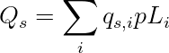
dove
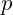
è il perimetro del palo e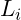
lo spessore attraversato nello strato.Falda e punta
La tensione efficace alla punta
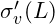
può cambiare sensibilmente con la quota di falda. In terreni granulari, questo modifica direttamente: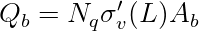
La stessa geometria di palo può quindi avere capacità diverse solo per effetto idraulico.
Domanda e capacità . La verifica non dovrebbe limitarsi a . È utile leggere il rapporto:
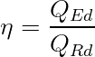
per confrontare alternative di diametro, lunghezza e stratigrafia.
Nel tema di la capacita assiale del palo, il dato geotecnico non è un parametro accessorio. Stratigrafia, falda, tensioni efficaci e rigidezze del terreno determinano la domanda e la capacità tanto quanto la geometria dell'opera.
Tensioni efficaci e stratigrafia
La tensione efficace è la grandezza che rende leggibile la risposta del terreno:
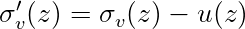
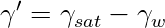
Quando la falda cambia quota, non cambia solo un valore idraulico: cambiano resistenze, spinte, rigidezze e talvolta il meccanismo critico. Per questo ogni calcolo geotecnico deve mostrare come si costruisce (\sigma'_v(z)).
Domanda, capacità e margine. La forma finale della verifica dovrebbe essere un rapporto domanda-capacità :
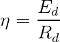
ma il rapporto va accompagnato dalla scomposizione dei contributi
Nel caso di palo singolo, il valore massimo o minimo non è sufficiente: servono diagrammi, stratigrafia e posizione del punto critico.
Esempio di stratigrafia
Si consideri uno strato superficiale di 3 m con (\gamma=18\,\mathrm{kN/m^3}), seguito da uno strato saturo con (\gamma_{sat}=20\,\mathrm{kN/m^3}). Con falda a 3 m, a 6 m di profondità :
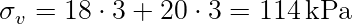
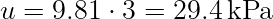
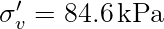
Questo valore entra poi nelle formule di capacità , spinta o rigidezza. Se la falda fosse più alta, il risultato cambierebbe in modo diretto.
Lettura da progettista. La capacità del palo è una somma di contributi distribuiti
Un unico valore finale senza la scomposizione punta-fusto non consente di capire cosa governa il risultato. Un riferimento tecnico deve quindi dichiarare le ipotesi geotecniche con la stessa cura delle formule strutturali. Il terreno non è lo sfondo del modello: è parte del modello.
Costruzione del modello geotecnico. Nei problemi geotecnici la parte più importante non è la formula finale, ma la costruzione del profilo di calcolo. Stratigrafia, falda, parametri drenati o non drenati e rigidezze non possono essere trattati come valori intercambiabili. Ogni strato contribuisce in modo diverso alla domanda e alla capacità .
Un profilo minimo dovrebbe riportare quota superiore e inferiore, peso di volume, condizioni di falda, angolo di attrito, coesione o resistenza non drenata, modulo o coefficiente di reazione. Solo dopo questa tabella ha senso applicare formule di capacità , spinta o deformabilità .
Tensioni efficaci come filo conduttore. Molte grandezze geotecniche dipendono dalla tensione efficace. Per questo è utile costruire esplicitamente il diagramma:
e non limitarsi a un valore alla quota di interesse. Nel caso dei pali, la tensione efficace alla punta influenza (Q_b), mentre quella lungo il fusto influenza (Q_s). Nel caso delle opere di sostegno, la tensione efficace entra nella spinta del terreno.
Domanda, capacità e deformabilità . Un calcolo geotecnico completo dovrebbe distinguere tra capacità ultima e risposta in esercizio. Un palo può avere capacità assiale sufficiente ma spostamento laterale eccessivo; un gruppo di pali può rispettare la portanza media ma avere un palo in trazione; un plinto può essere verificato come rigido ma mostrare una distribuzione FEM più gravosa.
Il rapporto domanda-capacità è utile:
ma deve essere affiancato alla grandezza deformativa, ad esempio spostamento, rotazione o cedimento.
Esempio di sensitività . Se la falda passa da 5 m a 2 m dal piano campagna, la tensione efficace a 8 m può ridursi sensibilmente. Una riduzione di (\sigma'_v) del 20% in un terreno granulare può ridurre direttamente la quota di resistenza di punta calcolata con (N_q\sigma'_vA_b). Questo mostra perché la falda non è un dettaglio di input, ma una variabile meccanica.
Scrittura da riferimento tecnico. Un articolo geotecnico solido deve sempre mostrare il percorso: dati di terreno, tensioni efficaci, formula, risultato, margine. Se manca uno di questi passaggi, il lettore non può ricostruire il calcolo.
Resistenza di punta e resistenza laterale. La capacita portante assiale di un palo singolo deriva dalla somma di due meccanismi: resistenza alla punta e resistenza laterale lungo il fusto. In forma generale:
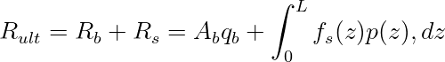
dove
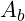
e l'area di base,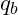
la pressione limite alla punta,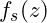
la tensione tangenziale mobilitabile lungo il fusto e) il perimetro. Questa formula e utile perche mostra che il palo non e un puntone rigido nel terreno: mobilita resistenza progressivamente, con contributi che dipendono da stratigrafia, tecnologia esecutiva, lunghezza e diametro.
il perimetro. Questa formula e utile perche mostra che il palo non e un puntone rigido nel terreno: mobilita resistenza progressivamente, con contributi che dipendono da stratigrafia, tecnologia esecutiva, lunghezza e diametro.
Nei terreni granulari, la resistenza laterale puo essere espressa in termini efficaci come:
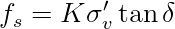
dove
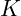
e un coefficiente di pressione laterale e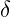
l'angolo di attrito palo-terreno. Nei terreni coesivi in condizioni non drenate, una forma semplificata e: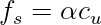
La scelta tra modelli drenati e non drenati non e formale: dipende dal terreno, dal tempo di applicazione del carico e dalle condizioni idrauliche.
Valore caratteristico e valore di progetto. Il passaggio da resistenza ultima a resistenza di progetto richiede l'applicazione dei coefficienti parziali e delle prescrizioni geotecniche. In forma sintetica:
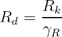
Il valore caratteristico
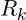
puo derivare da correlazioni geotecniche, prove in sito, prove di carico o combinazioni di queste informazioni. Una relazione tecnica robusta deve indicare la provenienza dei parametri: ,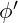
,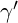
,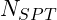
,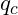
, livello di falda e stratigrafia. Senza questa tracciabilita, il numero finale ha poca forza ingegneristica.Un esempio: un palo con  ,
,  , perimetro
, perimetro  , lunghezza utile
, lunghezza utile
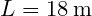
e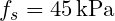
ha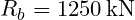
e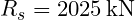
, quindi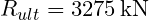
. Il progetto non usa direttamente questo valore: lo trasforma secondo il quadro normativo e il livello di conoscenza. I riferimenti da citare sono D.M. 17 gennaio 2018, Capitolo 6, Circolare C.S.LL.PP. 21 gennaio 2019 n. 7 e UNI EN 1997-1:2013.Controllo dimensionale. Un riferimento tecnico deve permettere al lettore di controllare gli ordini di grandezza. Ogni risultato numerico dovrebbe essere accompagnato da un controllo dimensionale, da una interpretazione fisica e da una indicazione del parametro dominante. Se una formula restituisce un valore in  ,
,  ,
,  o
o  , l'unita deve essere esplicita e coerente con le grandezze inserite.
, l'unita deve essere esplicita e coerente con le grandezze inserite.
La forma generale di una verifica puo essere letta come:

dove  e l'effetto dell'azione di progetto e
e l'effetto dell'azione di progetto e  la resistenza di progetto. Questa scrittura, comune a molti problemi strutturali e geotecnici, aiuta a separare domanda, capacita e margine.
la resistenza di progetto. Questa scrittura, comune a molti problemi strutturali e geotecnici, aiuta a separare domanda, capacita e margine.
Dal calcolo alla decisione. Il valore finale non basta. Bisogna chiedersi da quale ipotesi dipende, quanto e sensibile ai parametri e quale meccanismo fisico rappresenta. Un margine ottenuto con parametri poco tracciabili ha meno valore di un margine piu modesto ma ben documentato. Per questo, quando si cita una norma o un criterio di combinazione, il riferimento deve essere scritto in modo esplicito e verificabile.
Riferimenti normativi e bibliografici utilizzati:
- D.M. 17 gennaio 2018, "Aggiornamento delle Norme tecniche per le costruzioni", Ministero delle Infrastrutture e dei Trasporti, Supplemento ordinario alla Gazzetta Ufficiale n. 42 del 20 febbraio 2018.
- Circolare C.S.LL.PP. 21 gennaio 2019, n. 7, "Istruzioni per l'applicazione dell'Aggiornamento delle Norme tecniche per le costruzioni di cui al decreto ministeriale 17 gennaio 2018".
- UNI EN 1990:2006, Eurocodice - Criteri generali di progettazione strutturale.
- UNI EN 1991-2:2005, Eurocodice 1 - Azioni sulle strutture - Parte 2: Carichi da traffico sui ponti.
- UNI EN 1992-1-1:2015, Eurocodice 2 - Progettazione delle strutture di calcestruzzo.
- UNI EN 1993-1-1:2014, Eurocodice 3 - Progettazione delle strutture di acciaio.
- UNI EN 1994-2:2006, Eurocodice 4 - Progettazione delle strutture composte acciaio-calcestruzzo - Ponti.
- UNI EN 1997-1:2013, Eurocodice 7 - Progettazione geotecnica - Parte 1: Regole generali.
- UNI EN 1998-2:2011, Eurocodice 8 - Progettazione delle strutture per la resistenza sismica - Ponti.